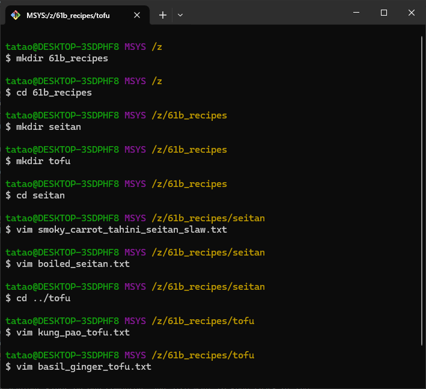

Preface: This guide is adapted from the Using Git guide from UC Berkeley's CS61B.
Version control systems are tools to keep track of changes to files over time. Version control allows you to view or revert back to previous iterations of files. Some aspects of version control are actually built into commonly used applications. Think of the undo command or how you can see the revision history of a Google document.
In the context of coding, version control systems can track the history of code revisions, from the current state of the code all the way back until it was first tracked. This allows users to reference older versions of their work and share code changes with other people, like fellow developers.
Version control has become a backbone of software development and collaboration in industry. In this class, we will be using Git. Git has excellent documentation so we highly encourage those who are interested to read more about what will be summarized in the rest of this guide.
Git is a distributed version control system as opposed to a centralized version control system. This means that every developer's computer stores the entire history (including all old versions) of the entire project! This is rather unlike tools like Dropbox, where old versions are stored on a remote server owned by someone else. We call the entire history of an entire project a "repository". The fact that the repository is stored locally leads to our ability to use Git locally on our computers, even without an internet connection.
The lab computers already have Git installed on the command line, and the lab01 setup guide explains how to install git on your own computer. In addition to the text based interface that we'll be learning to use in this guide, there is also a Git GUI (Graphical User Interface). We will not officially support usage of the graphical GUI.
Let's go through a narrative example of how we might use git. We'll be using lots of unfamiliar terms and ideas in this story. For a video version of this narrative example, see this video.
Suppose we want to store recipes of various kinds on our computer, and also want to keep track of the history of these recipes as we change them. We might start by creating directories for both seitan and tofu recipes, then creating each recipe using VIM (invoked using the vim command on my computer).
We're assuming that you're just reading this, rather than trying the commands out yourself. If you'd like to follow along by typing everything out, you'll need to use a text editor installed on your comptuer instead of vim.
Now we have four recipes, two for tofu, and two for seitan. To set up our git repository to store the histories of our recipes as they evolve, we'd use the following commands:
What git init does is tells the git version control system that we want to track the history of the current directory, in the case /users/sandra/recipes. However, at this point, nothing is stored in the repositry. It's like we've purchased a safe, but we haven't put anything in it yet.
To store everything in the repository, we need to first add files. For example, we might do the following:
Now here's where git is going to start to seem weird. Even after calling the add command, we still haven't stored our recipe in the repository (i.e. in the safe).